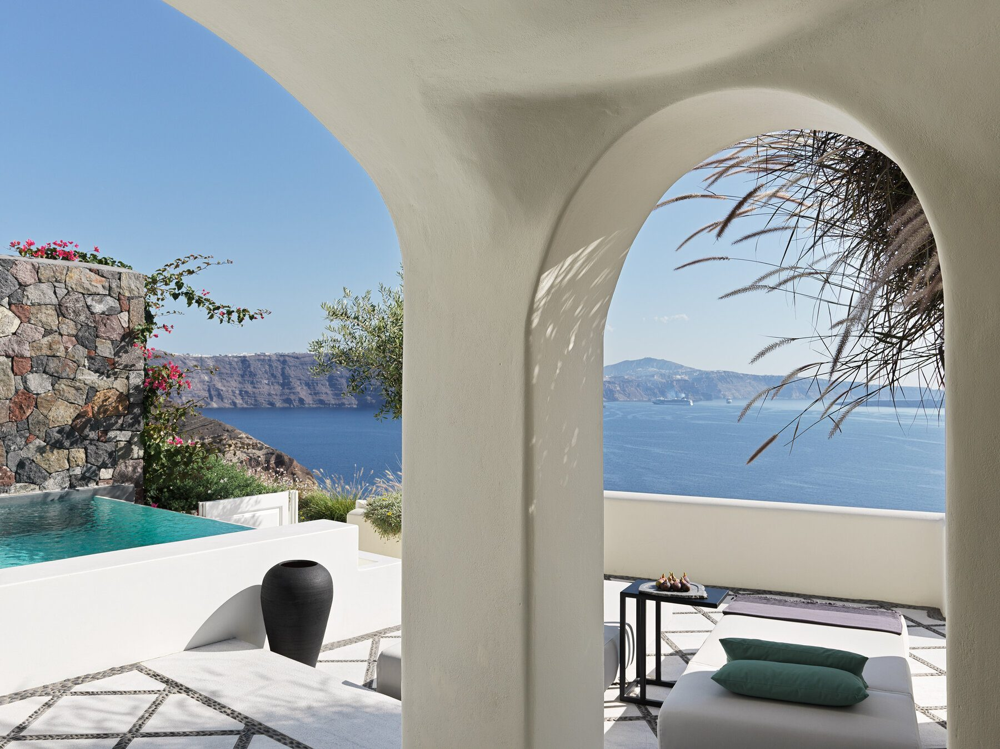
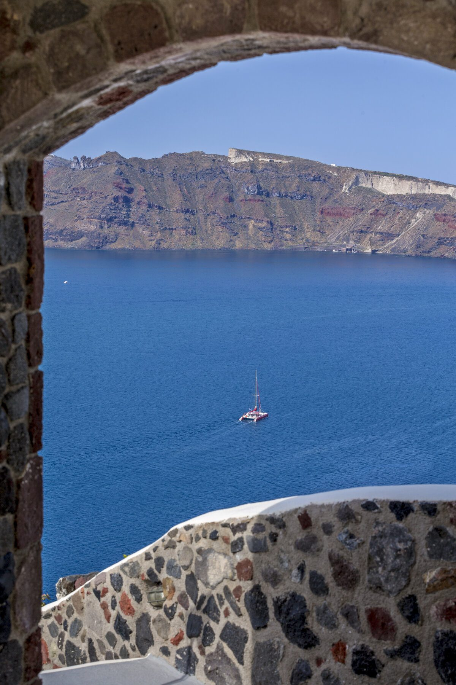
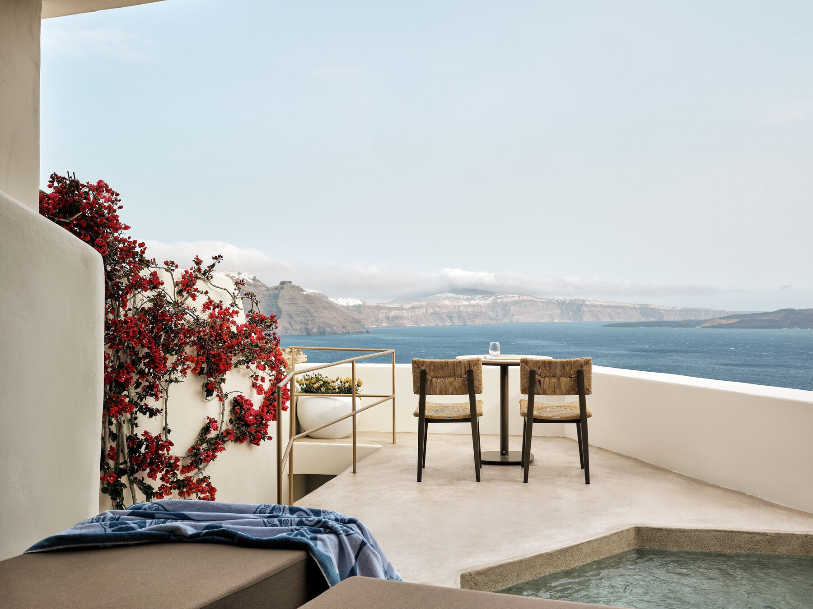
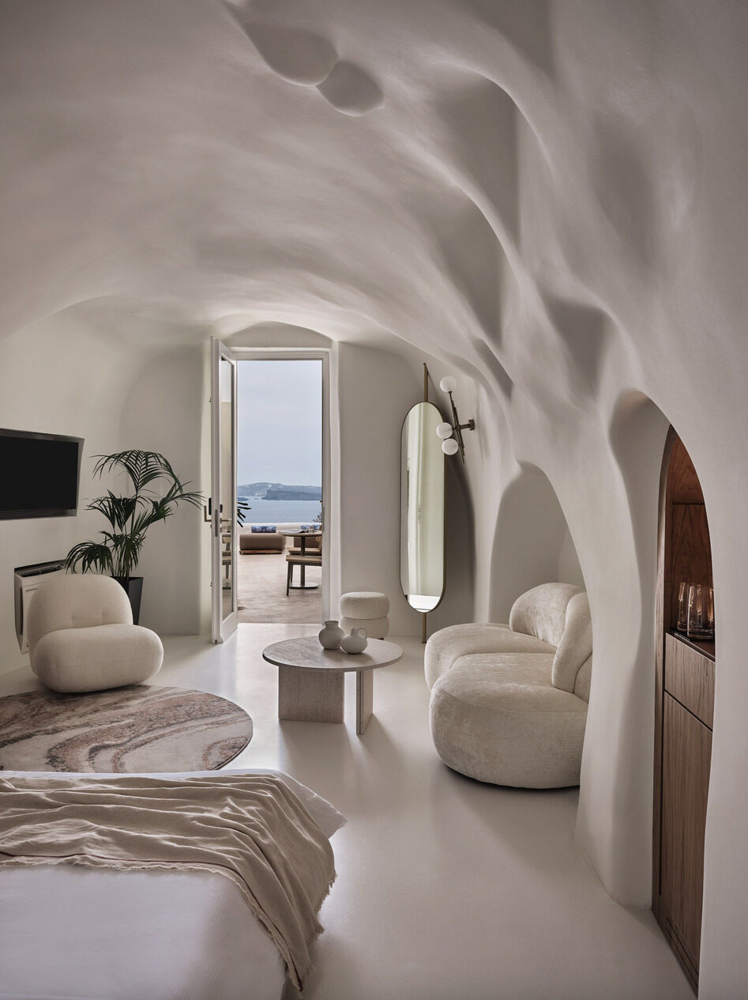
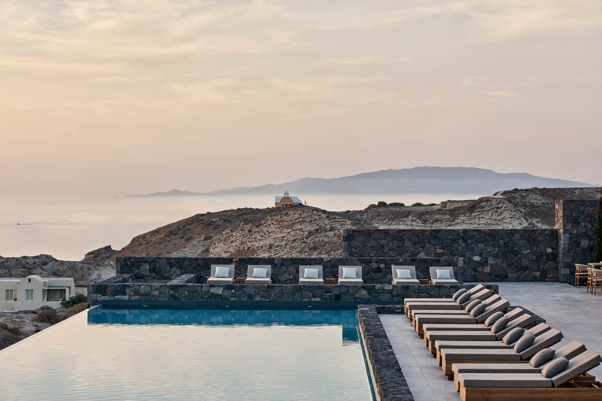
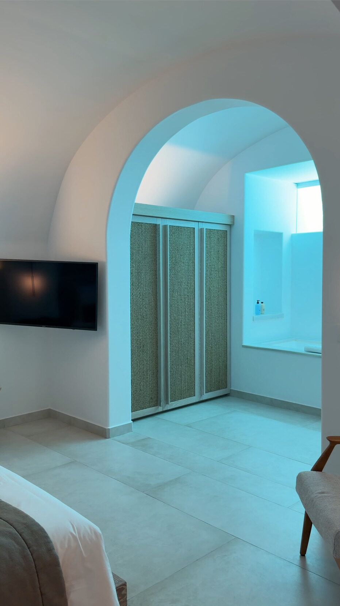
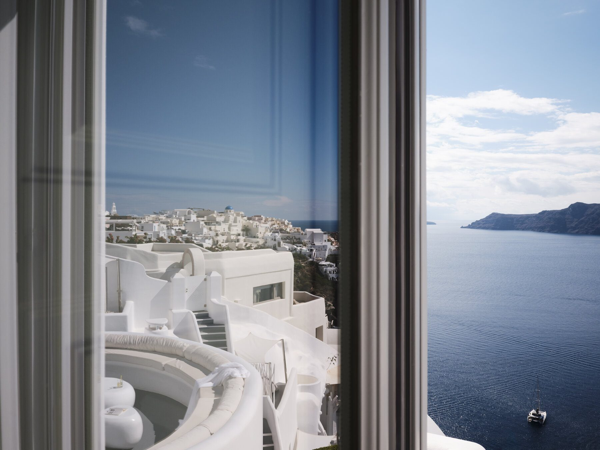

The Greece Collection · Issue No. 01
01The island that introduced the world to Cycladic luxury
See the caldera from the sea.
Taste Santorini's volcanic wines.
The island's most iconic walk.
The quintessential Santorini experience.
Private transfers are the easiest way to travel between the airport, ferry port, and your hotel. I also arrange private helicopter transfers through my partnership with Hoper, as well as private boat transfers, for travelers combining Santorini with nearby islands. Rental cars and ATVs provide flexibility, but most luxury travelers won't need one if staying along the caldera.
Santorini is one of those rare destinations that truly lives up to the hype. The secret isn't seeing more, it's slowing down. Wake up early, linger over long lunches, and enjoy the caldera from your own terrace instead of chasing every viewpoint. With the right hotel and itinerary, it's one of the most unforgettable luxury destinations in Europe.
Classic Santorini luxury and iconic sunsets.
The quietest luxury hotels and best honeymoon setting.
Restaurants, nightlife, and central convenience.

An icon of Oia
Some hotels become famous because of their views. Canaves Oia Suites has those, but it's the feeling of staying here that keeps people coming back. Renovated in 2024, the architecture is timeless, the service is polished without feeling formal, and every suite is designed to make the caldera the center of the experience. For a first luxury trip to Santorini, it's one of my easiest recommendations.
Don't assume every room has a pool. Unlike Andronis Boutique, private pools and jacuzzis aren't standard across every room category. If that's part of your Santorini vision, book accordingly.
Request a higher-category suite. The suites higher on the caldera offer more privacy than those below.
Don't underestimate the stairs. Even one of Oia's more accessible luxury hotels involves plenty of climbing. The views are worth it, but you'll definitely get your steps in.
If someone tells me it's their first trip to Santorini and they want a hotel that's hard to get wrong, Canaves Oia Suites is always near the top of my list. It delivers the classic caldera experience with polished service, beautifully renovated suites, and an atmosphere that feels effortlessly luxurious.


A caldera classic
Few hotels capture the essence of Santorini quite like Andronis Boutique. Set high above Oia's famous footpath, it combines iconic caldera views with genuinely warm hospitality. The atmosphere feels lively without ever becoming crowded, making it one of the easiest hotels to recommend for travelers experiencing Santorini for the first time.
Expect a serious workout. Andronis Boutique is spread across the cliffside, with numerous staircases connecting the suites, restaurants, and common areas. If mobility is a concern, this is worth considering before you book.
Reserve dinner at Lycabettus Restaurant. The best tables disappear quickly during peak season.
Not every traveler is looking for the same Santorini. If you'd prefer larger accommodations or a more family-friendly atmosphere, I'd also look at Andronis Arcadia or Andronis Concept. Both maintain the service and design that make the Andronis collection one of my favorites.
If I'm planning a Santorini honeymoon for younger couples, this is almost always my first recommendation. It delivers the iconic whitewashed architecture, dramatic caldera views, and lively atmosphere people imagine when they picture the island, while still feeling refined and romantic.


Santorini, reimagined
Located just outside the center of Oia, Canaves Epitome trades the island's busiest footpaths for spacious villas, peaceful surroundings, and some of the best sunsets you'll find anywhere on the island. With everything from one-bedroom villas to expansive two- to five-bedroom residences, it's one of Santorini's strongest options for families and groups traveling together.
Book a Pool Villa. The added privacy and indoor-outdoor living define the Epitome experience.
Wander the property's grounds. The gardens are the largest in the Cyclades, and feel a world away from busy Oia.
Make sure to have dinner on property. Omnia was the best meal I had in Greece.
If Canaves Oia Suites is Santorini's classic icon, Canaves Epitome is its modern evolution. It's the property I recommend for travelers who want the beauty of Oia but appreciate a little more privacy, space, and a slower pace.

How I'd spend three unforgettable days on Greece's most iconic island.

Check into your hotel and resist the urge to see everything at once. Spend the afternoon settling into your private terrace, enjoying lunch overlooking the caldera, and unwinding by the pool. End the day with a sunset catamaran cruise followed by dinner with uninterrupted sea views.
Wake early to wander Oia before the village comes alive. Spend the afternoon enjoying a leisurely winery lunch and tasting Santorini's volcanic Assyrtiko before returning to your hotel to relax. Finish the evening with dinner watching the sunset at Omnia at Canaves Epitome.
Enjoy a slow breakfast before hiking the scenic trail between Fira and Oia. Spend your final afternoon relaxing by the pool or at the spa before one last sunset from your own terrace. End your stay with a long farewell dinner overlooking the Aegean.
Skip the crowded sunset viewpoints and enjoy golden hour from your hotel instead or via a Private Sunset Cruise.
Want the full hotel-by-hotel breakdown? See Keith's Santorini Hotel Rankings for all 10 properties, ranked.